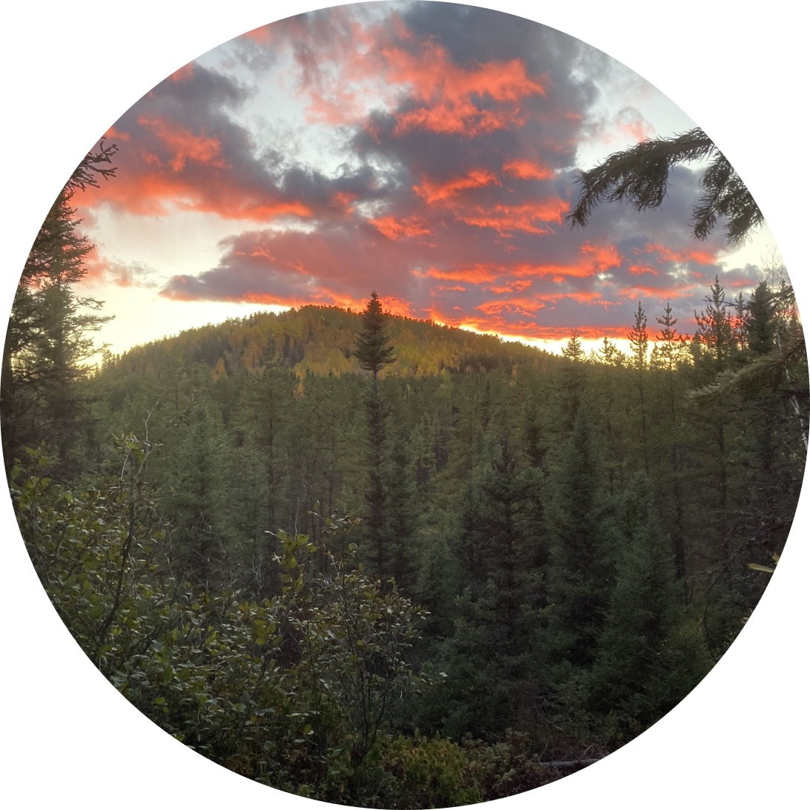

Trap sets
Type, location, bait and status for every set on your line.
- Trap 18
- Conibear 220 · Active
One connected workflow for every trip, every trap, and every detail worth keeping. Plan before you head out, find your way in the field, and keep every record organized, even with no signal.
Trapline IQ follows the rhythm of a real trapline: plan at the kitchen table, head out, check every set, and come home with records that are already done.
Download the map packs for your territory, drop pins for every set and save the route you want to run.
At home · 10 minGPS guides you set to set with no signal needed. Distance, speed and stops are tracked automatically.
On the trailLog a visit in two taps: capture, bait refreshed, reset or closed. Add a photo and a note while it's fresh.
At each trap · 20 secYour day syncs the moment you're back in range. Totals, catches and field notes are ready to review.
Back in rangeEverything you need on the line lives on your device. No bars, no problem: maps, pins, routes and logs all work offline and sync later.

Each visit builds a complete history of your trapline, so the end-of-season report practically writes itself.
Type, location, bait and status for every set on your line.
When you checked it and what you found, in two taps.
Species, sex, weight and whether it was targeted.
Weather and snow are attached to each day automatically.
Every trip with distance, time on trail and transport.
Observations, tracks and issues, with photos attached.
Can't find what you're looking for? Write to us at hello@traplineiq.ca and a real person will answer.
Yes. Download the map packs for your territory before you leave, and maps, GPS, pins and logging all work fully offline. Your entries sync automatically the next time you have a connection.
Topographic maps are available across Canada, from the Yukon to Newfoundland and Labrador, including registered trapline and UGAF zones where available.
You can invite trapping partners to a shared territory. Everyone sees the same sets and routes, and visits are tagged with who logged them.
Route recording is tuned for long days. Most trappers finish a full run with plenty to spare, and a low-power mode stretches it further in the cold.
Yes. Export a season summary or your full visit and capture history as a spreadsheet or PDF for your own records or reporting.